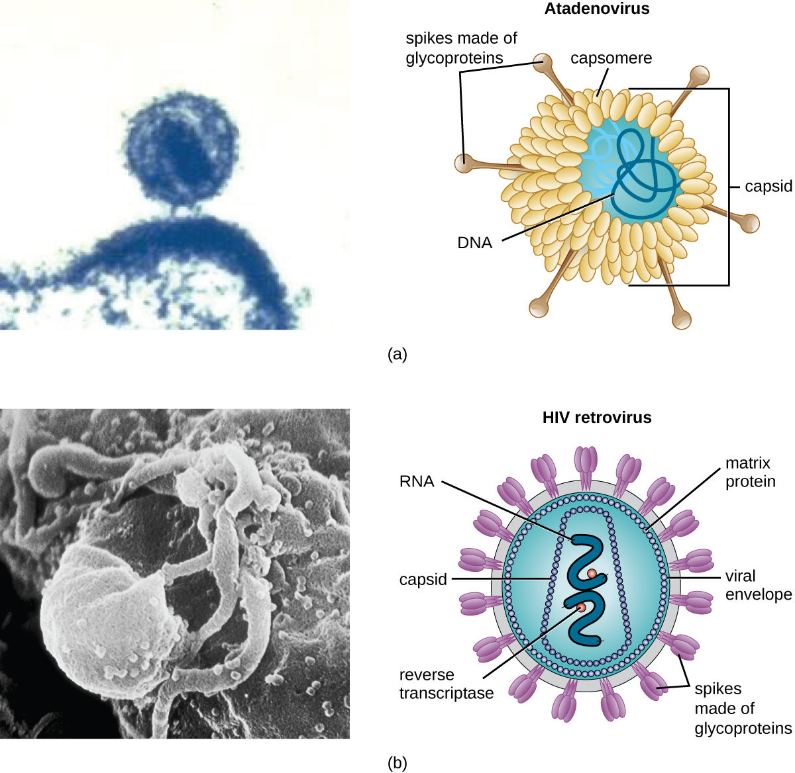
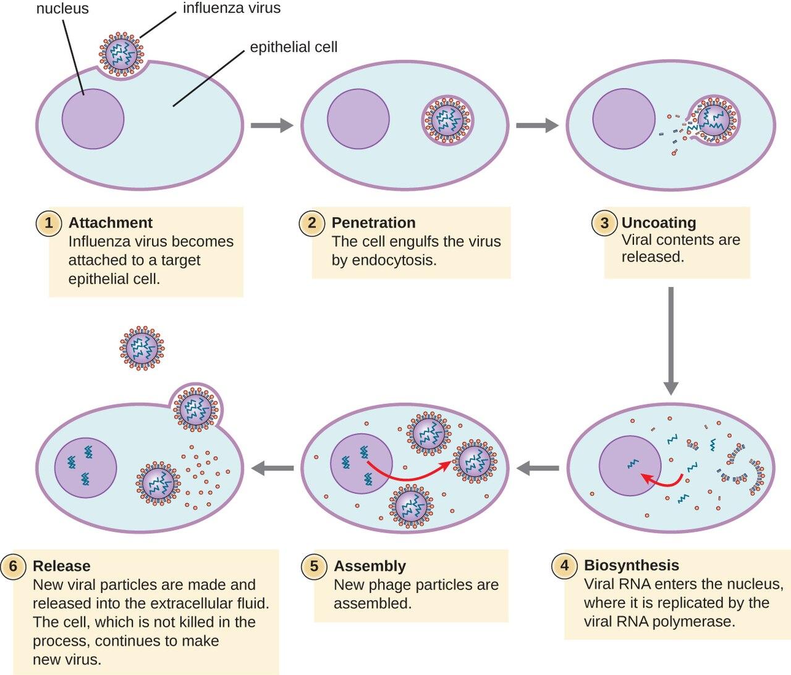
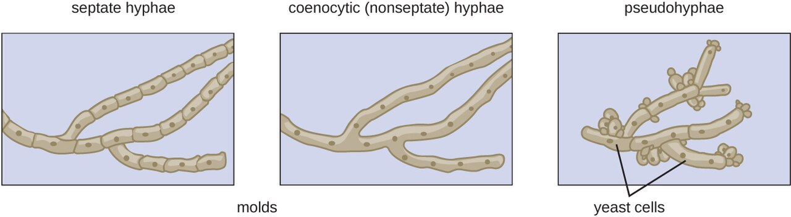
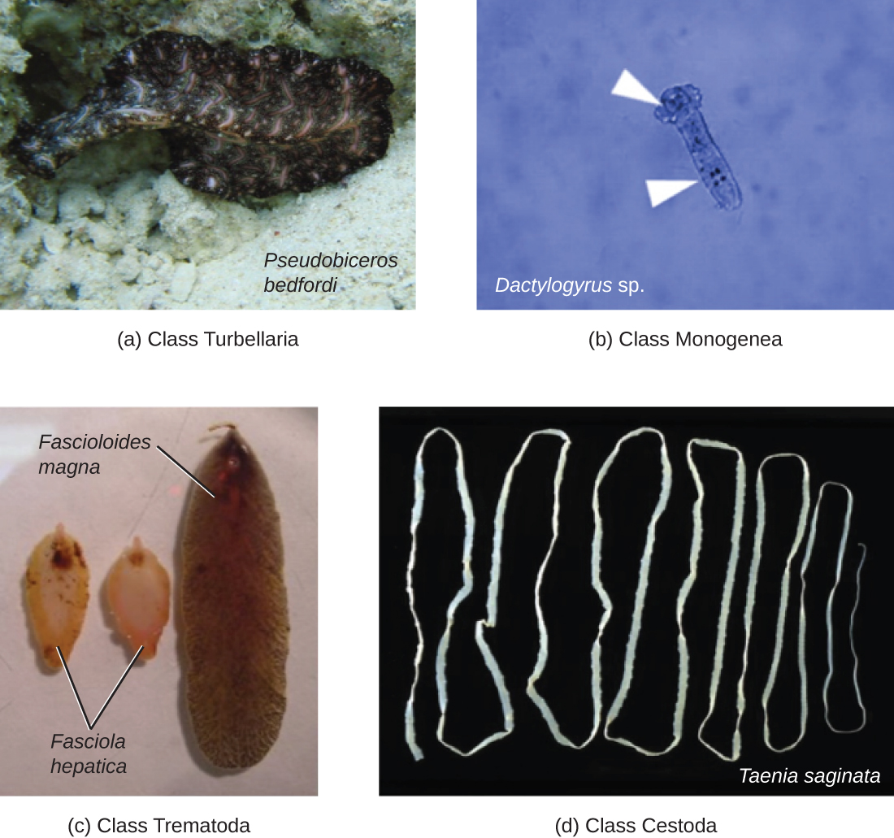

Viruses, Fungi & Parasites
Not every microbe is a bacterium. Once you step outside the bacterial world you meet a stranger cast of characters: viruses, which are barely alive and cannot reproduce without hijacking one of your cells; fungi, which are built more like us than like bacteria and are therefore harder to poison selectively; and the parasites — single-celled protozoa and multicellular worms — that cause some of the most widespread diseases on earth. This chapter walks through how each of these agents is built, how it makes copies of itself, and how it makes your patients sick. The through-line for the nurse is simple: what a pathogen is made of decides how you kill it, how it spreads, and how you protect the next patient from it.
By the end of this chapter you can
- Describe the parts of a virus — capsid, genome, and (sometimes) envelope — and explain why an envelope changes how a virus is disinfected.
- Walk through the viral replication cycle and explain how latency lets a virus hide and return.
- Distinguish yeasts from molds, name the common mycoses, and explain why antifungal drugs are harder on the patient than antibiotics.
- Explain how protozoa cause disease, using malaria and giardiasis as anchor examples.
- Separate the parasitic roundworms from the flatworms and recognize the clues (like eosinophilia) that suggest a worm.
- Connect each pathogen's structure to its route of transmission and the nursing precautions that interrupt it.
- Recognize why so many of these infections cluster in immunocompromised patients.
Section 1How a virus is built

Alive, or not quite?
A virus sits on the fence between living and non-living, and that in-between status is the single most important thing to understand about it. A virus is acellular — it is not a cell. It has no cytoplasm, no ribosomes, no way to make energy, and no machinery to copy itself. Left on a countertop, a virus is inert, more like a complicated chemical than an organism. It only comes to life when it enters a host cell and borrows that cell's machinery. Because it absolutely cannot reproduce on its own, a virus is called an obligate intracellular parasite — "obligate" meaning it has no choice. This is exactly why antibiotics do nothing to a virus: antibiotics attack bacterial cell structures, and a virus has none of them.
The capsid and the genome
Strip a virus down and you find two guaranteed parts. At the core is the genome — the virus's genetic instructions. Unlike your cells, which always use double-stranded DNA, viruses are wildly varied: a virus may carry DNA or RNA, and that nucleic acid may be single-stranded or double-stranded. This matters clinically because RNA viruses (influenza, HIV, SARS-CoV-2, hepatitis C) copy their genomes sloppily, mutate quickly, and are the reason we need a new flu shot every year. Wrapped around the genome is the capsid, a protective shell built from repeating protein subunits called capsomeres. The capsid protects the fragile genome and carries the surface proteins the virus uses to latch onto a host cell. Capsids come in a few classic shapes — helical (rod-like), icosahedral (a roughly spherical 20-sided cage), and complex — and together the capsid plus genome are called the nucleocapsid.
The envelope, and why hand hygiene cares
Some viruses add a third layer: an envelope, a lipid membrane the virus steals from its host cell on the way out. Studded in that envelope are viral spike proteins (glycoproteins) that act as the keys for the virus's next break-in — the SARS-CoV-2 spike and the influenza hemagglutinin are the famous examples. Whether a virus has an envelope or is "naked" turns out to be enormously practical at the bedside. An enveloped virus depends on its lipid coat to infect, and lipids are easy to destroy — soap, alcohol-based sanitizer, and ordinary drying pull the envelope apart, so enveloped viruses like flu, COVID, HIV, and herpes are relatively easy to kill. A non-enveloped (naked) virus, protected only by its tough protein capsid, shrugs off alcohol and survives for days on surfaces; norovirus and the poliovirus are classic hardy naked viruses that demand bleach and scrupulous surface cleaning.
| Feature | Enveloped virus | Non-enveloped (naked) virus |
|---|---|---|
| Outer layer | Lipid envelope with spike proteins | Protein capsid only |
| Environmental survival | Fragile — dries out, short-lived on surfaces | Hardy — survives for days |
| Alcohol / soap | Destroyed — the lipid coat dissolves | Often resistant |
| Best disinfectant | Alcohol sanitizer, soap and water | Bleach (hypochlorite) and friction |
| Examples | Influenza, SARS-CoV-2, HIV, herpes, hepatitis B | Norovirus, rotavirus, poliovirus, hepatitis A |
- A virus is acellular and an obligate intracellular parasite — it cannot reproduce without a host cell.
- Every virus has a genome (DNA or RNA, single- or double-stranded) inside a protein capsid; RNA viruses mutate fast.
- Some viruses add a stolen lipid envelope with spike proteins that serve as attachment keys.
- Enveloped viruses die to soap and alcohol; naked viruses resist alcohol and need bleach — a direct hand-hygiene decision.
Section 2How viruses replicate

The five-step cycle
Because a virus has no factory of its own, replication is really a story of hijacking. Across almost all viruses the sequence is the same five steps. First is attachment: a surface protein on the virus fits a specific receptor on the host cell, like a key in a lock — and that lock-and-key specificity is why a given virus infects only certain cells (HIV targets CD4 T-cells; rhinovirus targets airway lining). Second is entry (penetration), as the whole virus or just its genome slips inside. Third, and the heart of it, is biosynthesis: the viral genome commandeers the cell's ribosomes, enzymes, and building blocks to mass-produce viral proteins and copies of the viral genome. Fourth is assembly (maturation), where those fresh parts snap together into new virus particles. Fifth is release, when the new viruses escape to infect neighboring cells.
Budding versus bursting
That last step comes in two flavors, and the difference maps onto the envelope from Section 1. Naked viruses usually escape by lysis — the host cell is packed so full of new virus that it bursts and dies, releasing hundreds of particles at once. Enveloped viruses more often leave by budding, pushing through the host membrane and wrapping themselves in a piece of it (that is where the envelope comes from). Budding can be gentler and slower, which is part of how some enveloped viruses set up long, smoldering, chronic infections rather than a quick blaze. Either way, the destruction of host cells — whether by bursting or by wearing the cell out — is a major reason viral infections make people sick.
Latency: the virus that waits
Some viruses do not replicate and leave — they hide. In latency, the virus enters a cell, quiets down, and parks its genome inside the host, producing few or no new particles and causing no symptoms, sometimes for decades. Then, often when the immune system is stressed or weakened, it reactivates and starts replicating again. The herpesvirus family are the masters of this: varicella-zoster causes chickenpox, retreats into nerve roots, and can reawaken years later as painful shingles; herpes simplex hides in nerves between cold-sore or genital outbreaks. HIV does something similar at the DNA level, splicing a DNA copy of itself (a provirus) into the host chromosome, where it can sit silently — which is exactly why HIV cannot yet be cured, only suppressed.
| Step | What happens | Where drugs can strike |
|---|---|---|
| 1. Attachment | Viral protein binds a specific host receptor | Entry blockers (e.g., some HIV drugs) |
| 2. Entry | Virus or its genome enters the cell | Fusion inhibitors |
| 3. Biosynthesis | Host machinery mass-produces viral genome & proteins | Most antivirals (e.g., acyclovir, HIV reverse-transcriptase inhibitors) |
| 4. Assembly | New parts snap into complete particles | Protease inhibitors |
| 5. Release | New virus buds off or bursts the cell | Neuraminidase inhibitors (e.g., oseltamivir for flu) |
- Viral replication has five steps: attachment → entry → biosynthesis → assembly → release.
- Attachment is receptor-specific, which decides exactly which cells and hosts a virus can infect.
- Naked viruses tend to exit by bursting (lysis); enveloped viruses often exit by budding.
- Latency lets herpesviruses and HIV hide and reactivate; antivirals hit active replication, not the dormant genome.
Section 3Fungi

Yeasts and molds
Fungi are eukaryotes — their cells, like ours, keep DNA in a nucleus and are far more complex than bacteria. That family resemblance is exactly what makes fungal infections tricky to treat: a drug that harms a fungal cell can easily harm the patient's cells too. Fungi come in two body plans. A yeast is a single, oval cell that reproduces by budding off a small copy of itself; Candida is the classic yeast. A mold grows as long branching filaments called hyphae, which mat together into a visible fuzzy colony (a mycelium) — the green fur on old bread. Some fungi are dimorphic, living as a mold in the cool environment but switching to a yeast at body temperature; several dangerous lung fungi work this way. Two structural facts drive fungal drug therapy: the fungal cell wall is made of chitin (not the peptidoglycan bacteria use), and the fungal membrane is built on ergosterol where ours uses cholesterol. Ergosterol is the chink in the armor most antifungals aim for.
How fungal infections are grouped
Clinicians sort fungal diseases — the mycoses — largely by how deep they go. Superficial and cutaneous mycoses stay in the skin, hair, and nails; these are the dermatophyte infections nurses see constantly, the "tineas" — ringworm, athlete's foot, jock itch. Subcutaneous mycoses are driven deeper by trauma, like a thorn puncture. Systemic mycoses spread through the body and are the dangerous ones, frequently landing in the lungs. A crucial nursing theme runs through all of this: many serious fungal infections are opportunistic, meaning they take hold only when defenses are down — in patients on chemotherapy, on long courses of antibiotics or steroids, with poorly controlled diabetes, or with HIV/AIDS.
The mycoses nurses actually see
A handful of fungi account for most bedside encounters. Candida albicans is everywhere: it causes oral thrush (white plaques you can scrape off), vaginal yeast infections, diaper rash, and — when it reaches the bloodstream in a critically ill patient — life-threatening candidemia. Dermatophytes cause the itchy, ring-shaped tinea rashes. Aspergillus, a mold breathed in as spores, can carve out serious lung disease in the immunocompromised. Cryptococcus, picked up from bird droppings, causes a dangerous meningitis in AIDS patients. And Pneumocystis jirovecii causes the pneumonia (PJP/PCP) that is a hallmark of advanced HIV. Notice the pattern: the sicker and more immunosuppressed the patient, the more the fungi matter.
| Fungus | Type | Classic infection | Who's at risk |
|---|---|---|---|
| Candida albicans | Yeast | Thrush, vaginal yeast infection, candidemia | Antibiotic/steroid use, diabetes, ICU patients |
| Dermatophytes (Trichophyton & others) | Mold | Ringworm, athlete's foot, jock itch (tinea) | Anyone; warm, moist skin |
| Aspergillus | Mold | Invasive lung aspergillosis | Neutropenic, transplant patients |
| Cryptococcus neoformans | Yeast | Cryptococcal meningitis | Advanced HIV/AIDS |
| Pneumocystis jirovecii | Atypical fungus | PJP pneumonia | Advanced HIV/AIDS, immunosuppressed |
- Fungi are eukaryotes; yeasts are single cells that bud, molds grow as filamentous hyphae, and dimorphic fungi switch between the two.
- The fungal wall is chitin and the membrane uses ergosterol — the target of most antifungal drugs.
- Common mycoses range from skin tinea and Candida thrush to lethal systemic disease in the immunocompromised.
- Because fungi resemble our own cells, antifungals have narrower selective toxicity and more side effects.
Section 4Protozoa

Single-celled animals
Protozoa are single-celled eukaryotes that behave like tiny animals — many hunt, most move, and a great number are parasites of humans. Many protozoa live a two-stage life. The trophozoite is the active, feeding, dividing, disease-causing form. The cyst is a tough, dormant, walled-off form that survives outside the body — in water, on hands, in food — and is the form that transmits the infection to the next person. Understanding that split is genuinely useful: the cyst is what you are trying to block with clean water and hand hygiene, and the cyst's toughness is why some of these parasites survive ordinary chlorination.
Malaria: the world's great killer
Malaria is caused by the protozoan Plasmodium and spread by the bite of the female Anopheles mosquito — a classic vector-borne disease. After a bite, the parasite first multiplies quietly in the liver, then pours into the bloodstream and invades red blood cells, multiplying inside them until they burst in synchronized waves. Those bursts produce malaria's signature: cyclical fever, chills, and drenching sweats that recur every couple of days. The most dangerous species, Plasmodium falciparum, can clog small vessels in the brain and cause fatal cerebral malaria. The single most important nursing takeaway is a habit of mind: fever in a patient who has recently traveled to a malaria region is an emergency until proven otherwise, because falciparum malaria can kill within days.
Giardia and the other clinical protozoa
Giardia is the protozoan a nursing student is most likely to meet at home: its hardy cysts contaminate lakes and streams, so it causes "backpacker's" or "camper's" diarrhea — foul-smelling, greasy, floating stools with gas and cramps, spread fecal–oral through contaminated water. Because the cysts resist normal chlorine levels, prevention means boiling or filtering water, not just treating it. Beyond Giardia, a few other protozoa recur on the wards and in exams: Entamoeba histolytica causes bloody amebic dysentery and liver abscess; Trichomonas vaginalis is a common sexually transmitted infection; Toxoplasma gondii (from cat feces and undercooked meat) is dangerous in pregnancy and in AIDS; and Cryptosporidium causes waterborne diarrhea that becomes severe and prolonged in the immunocompromised.
| Protozoan | Disease | How it spreads | Hallmark |
|---|---|---|---|
| Plasmodium | Malaria | Anopheles mosquito bite (vector) | Cyclic fever/chills; invades red cells |
| Giardia lamblia | Giardiasis | Fecal–oral; contaminated water (cysts) | Greasy, foul, floating diarrhea |
| Entamoeba histolytica | Amebic dysentery | Fecal–oral | Bloody diarrhea; liver abscess |
| Trichomonas vaginalis | Trichomoniasis | Sexual contact | Frothy discharge; itching |
| Toxoplasma gondii | Toxoplasmosis | Cat feces; undercooked meat | Danger in pregnancy & AIDS |
- Protozoa are single-celled eukaryotes; many alternate between an active trophozoite and a tough, transmissible cyst.
- Malaria (Plasmodium, via Anopheles mosquito) invades red blood cells and causes cyclic fevers; falciparum can be rapidly fatal.
- Giardia spreads fecal–oral through cyst-contaminated water and causes greasy, foul diarrhea; cysts resist chlorine.
- Recent travel and pregnancy reshape the protozoal risk list — both are questions worth asking.
Section 5Helminths: the parasitic worms

Worms as pathogens
The helminths are parasitic worms — and strictly speaking they are not microbes at all, since an adult tapeworm can be meters long. They earn a place in microbiology because they are diagnosed the way microbes are: by finding their microscopic eggs and larvae in stool, blood, or tissue. Worms make people sick in slow, chronic ways — stealing nutrients, causing anemia and malnutrition, blocking the bowel or bile ducts, and triggering allergic-type immune responses. That last point gives the nurse a valuable clue: worm infections classically drive up the eosinophils, a white-blood-cell type that fights parasites, so an unexplained eosinophilia on a blood count should raise the question, "could this be a worm?"
Roundworms (nematodes)
Nematodes are the roundworms — smooth, cylindrical, tapered at both ends. The one you are guaranteed to meet is the pinworm (Enterobius), the most common worm infection in the United States, especially in children: the female crawls out to lay eggs around the anus at night, causing intense itching, and the eggs spread easily on hands and bedding through whole households. Other important roundworms include Ascaris, a large intestinal worm that can grow the length of a pencil and, in heavy loads, obstruct the bowel; hookworms, which latch onto the gut wall and suck blood, causing iron-deficiency anemia; and Trichinella, caught from undercooked pork.
Flatworms: tapeworms and flukes
The platyhelminths (flatworms) split into two clinical groups. The cestodes are the tapeworms — long, flat, ribbon-like worms with a head that hooks onto the gut wall and a body of repeating segments; people catch them from undercooked beef, pork, or fish. The trematodes are the flukes, leaf-shaped worms with complex life cycles that usually pass through a snail. Globally the most important is Schistosoma (blood flukes), a leading cause of chronic illness in parts of Africa, Asia, and South America, where its eggs damage the bladder, liver, and intestines over years. For a nurse in most settings, tapeworms and pinworm come up far more often than flukes — but the flukes are a reminder of how a travel or immigration history reshapes the differential.
| Worm | Group | Classic scenario | Main harm |
|---|---|---|---|
| Pinworm (Enterobius) | Roundworm | Itchy bottom in a child at night | Perianal itching; spreads in households |
| Ascaris | Roundworm | Large worm in stool; heavy load | Bowel obstruction, malnutrition |
| Hookworm | Roundworm | Walking barefoot on contaminated soil | Iron-deficiency anemia (blood loss) |
| Tapeworm (Taenia) | Flatworm (cestode) | Undercooked beef or pork | Nutrient theft; segments in stool |
| Schistosoma | Flatworm (trematode) | Freshwater exposure abroad | Chronic bladder/liver/gut damage |
- Helminths are parasitic worms, diagnosed microscopically by their eggs and larvae; they cause slow, chronic harm.
- An unexplained eosinophilia is a classic clue that a worm may be present.
- Roundworms (nematodes) include pinworm, Ascaris, and blood-sucking hookworms.
- Flatworms (platyhelminths) are the tapeworms (cestodes) and flukes (trematodes), including Schistosoma.
The chapter in one breath
- A virus is acellular — a genome in a protein capsid, sometimes wrapped in a lipid envelope — and must hijack a host cell to reproduce.
- Enveloped viruses die to soap and alcohol; naked viruses resist alcohol and need bleach, a real hand-hygiene decision.
- Viruses replicate in five steps (attach, enter, biosynthesize, assemble, release); latency lets herpesviruses and HIV hide and reactivate.
- Fungi are eukaryotes — yeasts bud, molds form hyphae — and their ergosterol membrane is the antifungal target; many mycoses are opportunistic.
- Protozoa are single-celled parasites; malaria invades red cells and can kill fast, and Giardia spreads through cyst-contaminated water.
- Helminths are worms — roundworms (pinworm, Ascaris, hookworm) and flatworms (tapeworms, flukes) — found by their eggs and hinted at by eosinophilia.
- Across all four groups, the sickest and most immunocompromised patients carry the greatest risk, and pathogen structure dictates prevention.
ReferenceWords worth knowing
A quick reference for the terms in this chapter — skim it now, or circle back whenever a word trips you up.
- Acellular
- Not made of cells; describes viruses, which have no cytoplasm, ribosomes, or metabolism of their own.
- Budding
- Two meanings here: how a yeast reproduces (pinching off a daughter cell), and how an enveloped virus exits a host cell by wrapping itself in host membrane.
- Capsid
- The protein shell, built of repeating capsomeres, that surrounds and protects a virus's genome.
- Cestode
- A tapeworm; a flatworm with a hooking head and a ribbon of repeating segments.
- Cyst
- The tough, dormant, environmentally resistant form of many protozoa, responsible for transmission.
- Dermatophyte
- A mold that infects skin, hair, and nails, causing the ringworm/tinea group of infections.
- Dimorphic fungus
- A fungus that grows as a mold in the environment but converts to a yeast at body temperature.
- Envelope
- A lipid membrane, stolen from the host cell, that coats some viruses and makes them easy to kill with soap or alcohol.
- Eosinophilia
- An elevated eosinophil count on a blood test; a classic clue to a parasitic worm infection or allergy.
- Ergosterol
- The sterol in fungal cell membranes (where humans use cholesterol); the main target of antifungal drugs.
- Helminth
- A parasitic worm — a roundworm (nematode) or flatworm (platyhelminth).
- Hyphae
- The branching filaments that make up the body of a mold; a tangled mass of them is a mycelium.
- Latency
- A dormant state in which a virus parks its genome in a host cell, causing no symptoms until it reactivates.
- Mycosis
- Any fungal infection; classified as superficial, cutaneous, subcutaneous, or systemic by how deep it goes.
- Nematode
- A roundworm — smooth and cylindrical — such as pinworm, Ascaris, or hookworm.
- Obligate intracellular parasite
- An agent that cannot reproduce outside a host cell; all viruses qualify.
- Protozoan
- A single-celled, often motile eukaryote; many are human parasites (e.g., Plasmodium, Giardia).
- Provirus
- A DNA copy of a virus's genome integrated into the host chromosome, as HIV does during latency.
- Spike protein
- A glycoprotein projecting from a viral envelope that the virus uses to attach to host-cell receptors.
- Trematode
- A fluke; a leaf-shaped flatworm with a snail stage in its life cycle, such as Schistosoma.
- Trophozoite
- The active, feeding, dividing, disease-causing form of a protozoan.
- Yeast
- A single-celled fungus that reproduces by budding, such as Candida.